緣授茶
為妳帶來幸福的緣
 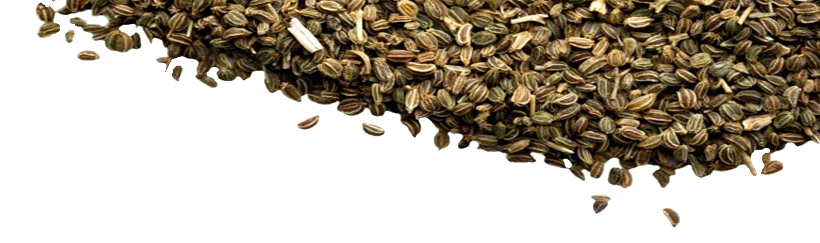
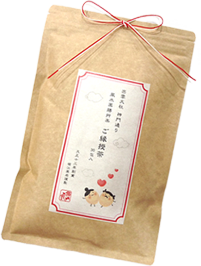
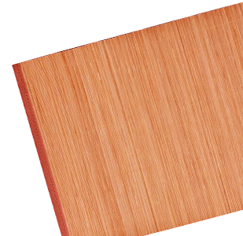
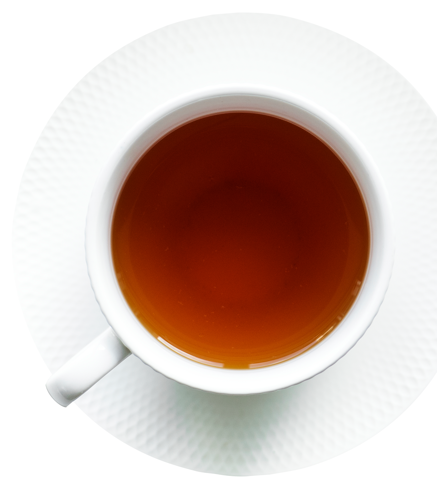
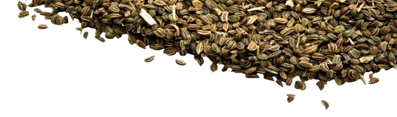
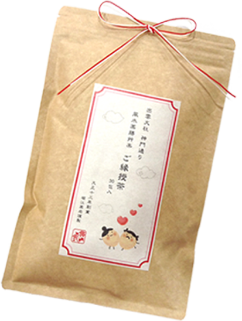
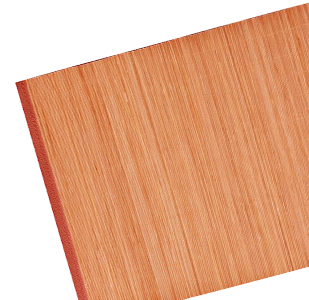
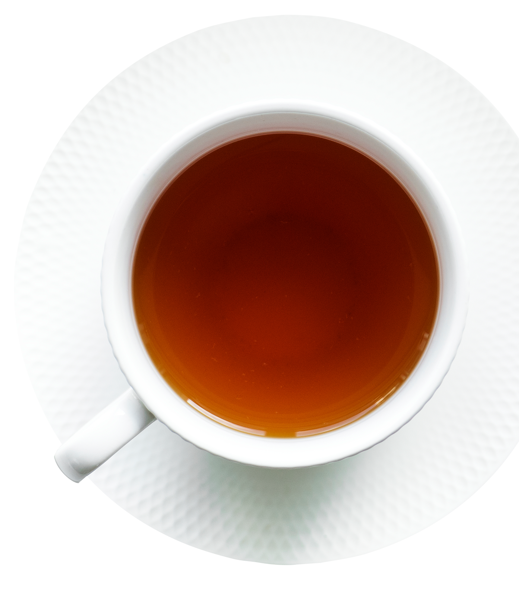
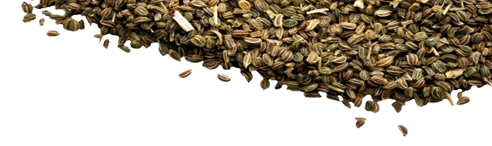
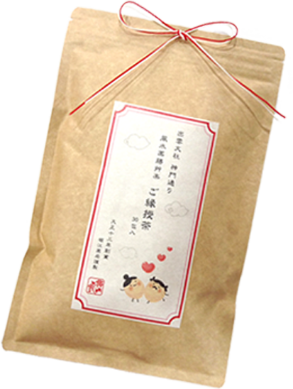
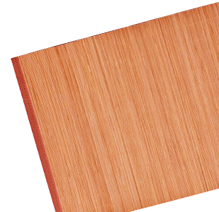
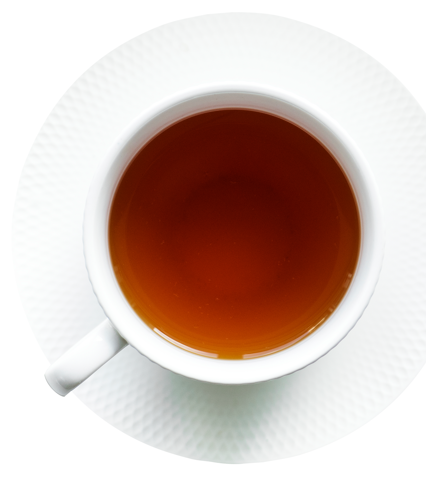
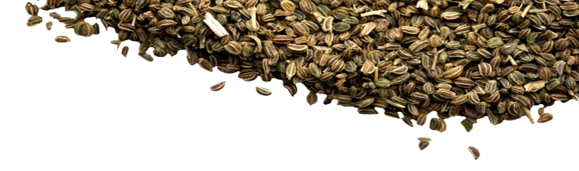
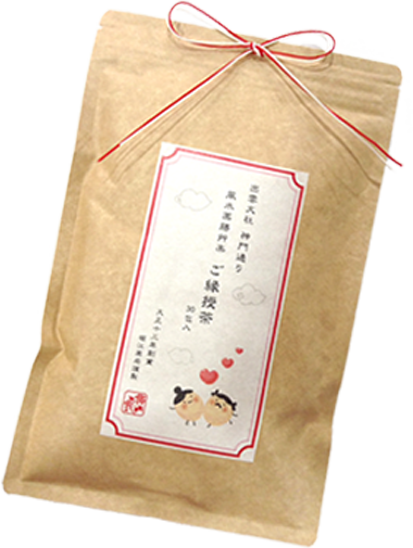
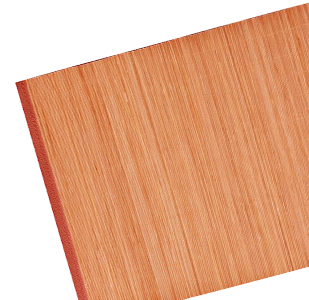
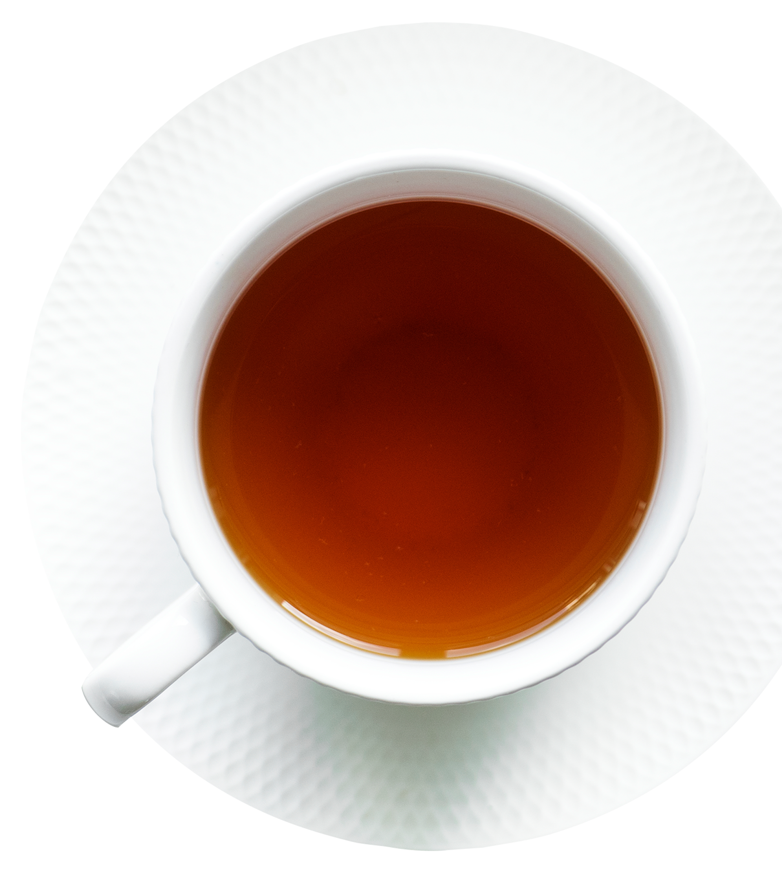
緣授茶是由日本不孕專家中醫師-堀江昭佳所研發製作。
堀江昭佳中醫師透過診斷超過5萬名女性發現，不孕的女性幾乎 都有「血流不順」的問題，而女性懷孕的器官「子宮」的機能卻
需要靠健康的血液來輸送氧氣及養份。
透過改善血流讓子宮機能恢復到原本的水準，便是堀江昭佳醫生 開發緣授茶的原因。緣授茶成分溫和，食材非藥品，為堀江昭佳
中醫生根據家傳4代約百年歷史的漢方觀念所嚴選，幫助促進血 液生成、加強血液循環。
日本至今已經有1400位以上女性因為改善血流而成功懷孕。